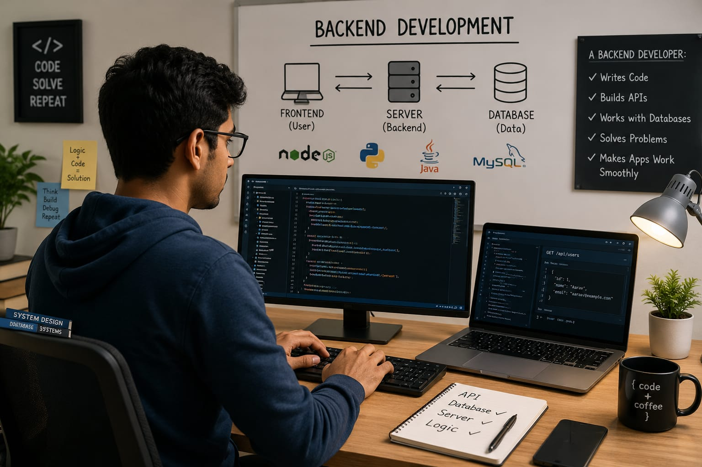

- Imagine you open an app and log into your account.
- Your entered your password, and other personal informations.
- These informations are stored in the "Backend" of the website or app.
- The person who develop this part is called a Backend Developer.
- 👉 In simple words: Backend Developers build the behind-the-scenes systems that help apps and websites work smoothly.
Backend Developer
🧑🎨 What Do They Do?

🎓 How to Become a Backend Developer
These beginner-level computer courses help students learn programming, computer basics, databases, web technologies, and software development skills.
Diploma in Computer Science & Engineering (CSE)
Duration: 3 Years
Eligibility: Class 10 Pass
Exam: Polytechnic Entrance Exam / Merit-Based Admission
ITI Computer Operator and Programming Assistant (COPA)
Duration: 1 Year
Eligibility: Class 10 Pass
Exam: Merit-Based Admission
Diploma in Software Development
Duration: 1 – 2 Years
Eligibility: Class 10 Pass
Exam: Direct Admission / Institute-Level Test
Certificate Course in Programming & Web Development
Duration: 6 Months – 1 Year
Eligibility: Open to Beginners
Exam: Direct Admission
📝 Exam Details
(Click on the exam name to see full details)
Polytechnic Entrance Exam Merit-Based Admission Direct Admission Institute-Level TestNote: Many backend developers start learning coding through diploma courses, certificates, online programs, and regular programming practice.
These courses help students learn programming, databases, backend technologies, server-side development, and software engineering skills.
Bachelor of Computer Applications (BCA)
Duration: 3 Years
Eligibility: 10+2 Pass (Any Stream; Mathematics or Computer Science preferred)
Exam: CUET-UG / State-Level CET / University Merit
B.Tech in Computer Science / Information Technology
Duration: 4 Years
Eligibility: 10+2 Pass (with Physics, Chemistry, and Mathematics)
Exam: JEE Main / State Engineering Entrance Exams
BSc Computer Science
Duration: 3 Years
Eligibility: 10+2 Pass (Mathematics preferred)
Exam: CUET-UG / Merit-Based Admission
Bachelor in Software Development / Web Technology
Duration: 3 – 4 Years
Eligibility: 10+2 Pass
Exam: University Entrance Test / Direct Admission
📝 Exam Details
(Click on the exam name to see full details)
CUET-UG JEE Main State Engineering Entrance Exams Merit-Based Admission Direct AdmissionNote: Backend Developers usually improve their skills through coding practice, projects, internships, and learning modern programming technologies.
Diploma holders can directly enter the 2nd year of degree programs and complete graduation faster.
B.Tech Lateral Entry (CSE / IT)
Duration: 3 Years
Eligibility: Diploma in Computer Science / IT or Related Field
Exam: State Lateral Entry Entrance Exams
BCA Lateral Entry
Duration: 2 – 3 Years
Eligibility: Diploma in CSE, IT, or Computer Applications
Exam: Merit-Based Admission / University Entrance Exam
Advanced Diploma in Backend Development
Duration: 1 Year
Eligibility: Diploma in Computer / IT Field
Exam: Direct Admission / Institute-Level Test
Cloud Computing & Server Management Program
Duration: 6 Months – 1 Year
Eligibility: Diploma or Equivalent Qualification
Exam: Online Assessment / Direct Admission
📝 Exam Details
(Click on the exam name to see full details)
State Lateral Entry Entrance Exams University Entrance Exam Merit-Based Admission Direct AdmissionNote: Diploma students can build strong backend development careers through coding practice, internships, projects, and advanced software training.
These advanced courses help students improve backend development, software engineering, cloud computing, database management, and system architecture skills.
Master of Computer Applications (MCA)
Duration: 2 Years
Eligibility: Graduate (BCA, BSc CS, or any degree with Mathematics)
Exam: NIMCET / State-Level MCA Entrance Exams
M.Tech in Computer Science / Software Engineering
Duration: 2 Years
Eligibility: B.Tech / BE / MCA or Related Degree
Exam: GATE / University Entrance Exam
Post Graduate Diploma in Computer Applications (PGDCA)
Duration: 1 Year
Eligibility: Graduate in Any Discipline
Exam: Merit-Based Admission / Direct Admission
Cloud Computing & Backend Development Specialization
Duration: 6 Months – 1 Year
Eligibility: Graduation in Computer / IT Field Preferred
Exam: Direct Admission / Online Assessment
📝 Exam Details
(Click on the exam name to see full details)
NIMCET GATE State-Level MCA Entrance Exams Merit-Based Admission Direct AdmissionNote: Many backend developers improve their career growth through advanced coding skills, internships, cloud technologies, and real-world software projects.
Note:
(Age limits, marks, and admission process may vary depending on the college or state. These courses are available in many colleges and universities across India. You can choose colleges based on your location, budget, and entrance exams.)
🏛️ Top Colleges for Backend Development & Software Engineering
(Tap on a college to view the details)
📜 After 10th Pass (Diplomas & Foundation)
National Institute of Electronics & Information Technology (NIELIT), New Delhi Aptech Computer Education (Multiple Locations) Jetking Infotrain (Multiple Locations) Government Polytechnic Colleges (Various States) CADD Centre Training Services, India🎓 After 12th Pass (Bachelor's Degrees)
Indian Institute of Technology (IIT) Madras, Chennai Indian Institute of Technology (IIT) Bombay, Mumbai International Institute of Information Technology (IIIT), Hyderabad Birla Institute of Technology & Science (BITS), Pilani Vellore Institute of Technology (VIT), Vellore Christ University, Bengaluru↪️ After Diploma (Lateral Entry)
Delhi Technological University (DTU), New Delhi Jadavpur University, Kolkata Anna University, Chennai Thapar Institute of Engineering and Technology, Patiala PSG College of Technology, Coimbatore🏢 After Graduation (Master's Degrees & Advanced Studies)
National Institute of Technology (NIT), Trichy Jawaharlal Nehru University (JNU), New Delhi University of Hyderabad (UoH), Hyderabad Delhi Technological University (DTU), New Delhi Birla Institute of Technology (BIT), MesraSTEP 1
Imagine you are working as a Backend Developer.
STEP 2
A company asks your help to build a mobile app.
STEP 3
You create the backend system that stores user data and passwords.
STEP 4
You also make sure the app works smoothly without problems.
STEP 5
Once the app is launched, people use the app easily because of the backend system you build.
STEP 6
If you enjoy doing this,then this career may suit you.
Where do Backend Developers work? (Job Roles + Growth)
These are some roles you can explore in Backend Development.
You usually start with beginner roles and grow with experience.
🟢 Beginner Roles
💻
Junior Backend Developer
(After Short-Term Course / Diploma)
Writes basic backend code and helps build simple app features.
🛠️
Backend Intern
(After Certificate / Diploma / BCA)
Tests code, fixes small bugs, and learns backend systems.
🗄️
Database Assistant
(After Diploma / Graduation)
Helps manage and organize app and website data.
🌐
API Support Developer
(After Online Course / Graduation)
Creates and tests APIs used in websites and mobile apps.
🔵 Mid-Level Roles
⚙️
Backend Engineer
(After BCA / B.Tech / BSc CS + Experience)
Builds server-side systems and manages application logic.
🗃️
Database Administrator
(After Graduation + Experience)
Manages databases and protects important company data.
☁️
Cloud Backend Developer
(After Cloud Certification + Experience)
Works with cloud servers and online application systems.
🔒
Security Backend Developer
(After Cybersecurity Training + Experience)
Builds secure systems to protect user accounts and data.
🟣 Advanced Roles
🏗️
Backend Architect
(After MCA / M.Tech + Experience)
Designs large backend systems used by apps and companies.
🚀
DevOps Engineer
(After Postgraduate Program + Experience)
Manages servers, deployment systems, and cloud infrastructure.
👨💼
Technical Lead
(After Senior Development Experience)
Leads backend development teams and software projects.
💻
Software Companies
Backend Developers work in companies that build websites, apps, and online platforms.
☁️
Cloud & Server Companies
They manage cloud systems, databases, and online servers used worldwide.
📱
Mobile App Companies
They create backend systems that help mobile apps run smoothly.
🛒
E-Commerce Companies
They build systems for online shopping, payments, orders, and user accounts.
🌐
International Tech Companies
Many global companies hire Backend Developers to build large online platforms.
🏠
Remote Freelancing
Work from home and build projects for clients around the world.
(Click Yes or No for each question)
1. When you use an app, have you ever wondered where your information is stored?
2. Have you ever thought of creating your own app or website?
3. Are you interested in learning coding?
4. Do you enjoy solving problems step by step?
5. Imagine a company asks you to create the backend of their website. You build system that stores customer details, products details etc. You make sure website works properly from behind the scenes. Does this excites you?